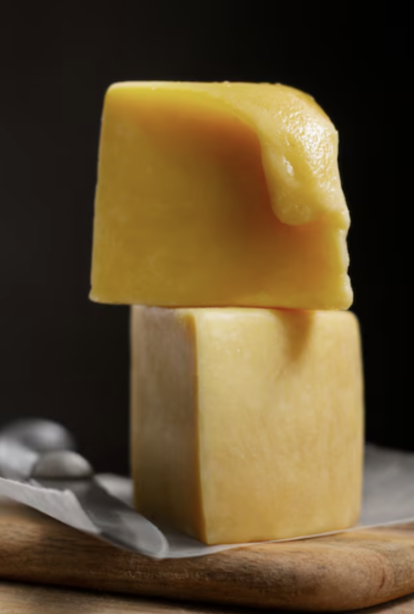

|  |
Team Members:
Heekyung Lee (3040759387), Jonah Tharakan (3036651401), Jaewon Hur (3039164221), Allison Dana (3038945561)
Our goal in this project is to create a physically accurate representation of melting cheese. We chose this project because of the novelty and entertainment aspect. However, we believe models like these could be used in advertising for large food corporations or to model physically accurate simulations for engineering with similar materials such as LDPEs. To do this, we used the concept of phyxels, implemented physics such as gravity and temperature responses, rendered using marching cubes and then did shader work such as blinn-phong and an attempted texture shader. We ultimately were successful in “melting” a block of cheese with tunable higher temperature after colliding with a plane, and were relatively successful in melting a cube of cheese over a rod to show interaction with other objects.
We built our project on top of the homework 4 framework, as it already had the steps needed to initialize/link shaders and a nice UI for interacting with a mass-spring system. We had to modify the initialization to create a 3d cheese object, overhaul the physics to support our 3d object, implement our own rendering method with marching cubes, modify the UI to add a temperature slider, and edit the main loop to get all of this working together. Our project can be broken down into the main steps of our simulation/render loop.
To initialize our cheese object, we start by initializing some number of phyxels (point masses) in a cube array. For most of our testing and showcase, we use 1000 phyxels in a 10x10x10 pattern. Once the phyxels are in place, we initialize springs between them by connecting each phyxel to its 26 nearest neighbors with a spring that has rest length equal to the actual distance between the two phyxels. To implement the nearest neighbors search, we use a K-d tree. Though for the simple cube case it is probably easier and faster to hardcode neighbors, we opted to use a K-d tree in the hopes that we could eventually expand our project to include cheeses of any shape, not just cubes. Unfortunately we were not able to implement this feature in time. The K-d tree we used was already implemented by nanoflann (https://github.com/jlblancoc/nanoflann) so all we had to do was simply copy a header file and create an adapter struct to represent the K-d tree in our code. After that, we were able to make queries such as finding the K nearest neighbors of any point in 3d space.
Our physics loop is heavily inspired by homework 4 but has been extended in many key ways to make the simulation more robust and realistic for an object such as cheese. As with the homework 4 code, our first task in each simulation step is updating each phyxel with any external forces. This is done by simply adding the force to a force vector of each phyxel. The next step is to apply the spring forces. For every spring in the system, we calculate the correct force with Hooke’s Law. We extended this, though, by adding a spring damping force as well. For each spring, we calculate the velocity along the axis of the spring. Based on that velocity, we apply a damping force which points opposite the velocity. The purpose of this is to damp the motion of the springs without having to slow down the entire simulation. We implemented this so the cheese would not be so wobbly at low temperatures, where it should act more as a solid object. After computing both types of forces, we then do time integration to turn forces into positional updates. We use the same Verlet integration formula as in homework 4. This time, though, we compute the damping factor using a formula based on the temperature. The formula, which is of our own design, is “globalDamping = 0.99 + 0.01 * pow(T, 1/20) / pow(100, 1/20)”. This means the damping factor is 0.99 when T = 0, and becomes 1.0 when T = 100. We chose such a high starting value because anything lower is extremely obvious as it slows down the object as it falls. After integration, we collide the phyxels of the object with any external colliders present in the scene. This is the exact same as homework 4, though we have added one more primitive which is an infinitely long cylinder (rod). The most important additional step we have added is updating the springs. After all the above steps have run, we do the following for each spring: - Check if the springs current length is longer than its rest length - If so, very slightly increase the rest length of the spring - The factor it increases by will increase linearly with temperature. This has the critical effect of making the cheese “melt” over time, with the melting rate increasing with temperature. At T = 0, there is no melting so the cheese acts like a fully solid object. At T = 100, the cheese cube immediately squishes upon landing and appears to act like a liquid. Intermediate values will have the cube slowly melt if it is already on solid ground.
Our first line of thinking was to use surfels to render the surface of the cheese, since by this point, we had only used point particles. However, we got held up with the implementation of these, and looked into other methods, one of them being marching cubes. The marching cubes algorithm is a popular algorithm to render points in 3D space based on a grid of cubes. The way it works is that we assign every point to be a single value to effectively “flatten” the points within the grid, and then use an algorithm to determine which surface points are contained within a singular cube as it “marches” along the grid. Because we already had our phyxel grid, we used that. To render the surface, we used a triangulation “matching” function that mapped orientations of points on the cubes to their corresponding physical configurations. The goal of this function was to create triangles within a singular cube and traverse the cube over the grid to ultimately create a mesh. We asked ChatGPT to help us with this triangulation table part so we could implement it quickly without doing the math ourselves. The logic for this part of the rendering process was largely taught to us by these three youtube videos: https://www.youtube.com/watch?v=zY0qnkT1dh8&ab_channel=Genka https://www.youtube.com/watch?v=M3iI2l0ltbE&ab_channel=SebastianLague https://www.youtube.com/watch?v=KvwVYJY_IZ4&ab_channel=Deadlock though all code was our own with the help of ChatGPT.
Our result is a nice framework to simulate blocks of cheese and melt them by increasing the temperature! TODO Insert videos
https://www.youtube.com/watch?v=uCaHXkS2cUg&ab_channel=TenMinutePhysics https://www.youtube.com/watch?v=MgmXJnR62uA&ab_channel=blackedout01 https://www.youtube.com/watch?v=M3iI2l0ltbE&ab_channel=SebastianLague was useful for understanding but all the code was taken from chat gpt, except for the data tables which were taken from https://github.com/nihaljn/marching-cubes/blob/main/include/marching_cubes.hpp https://ashmchiu.github.io/cs184-proj-writeup/#surface-reconstruction Inspiration for metaballs/marching cubes approach